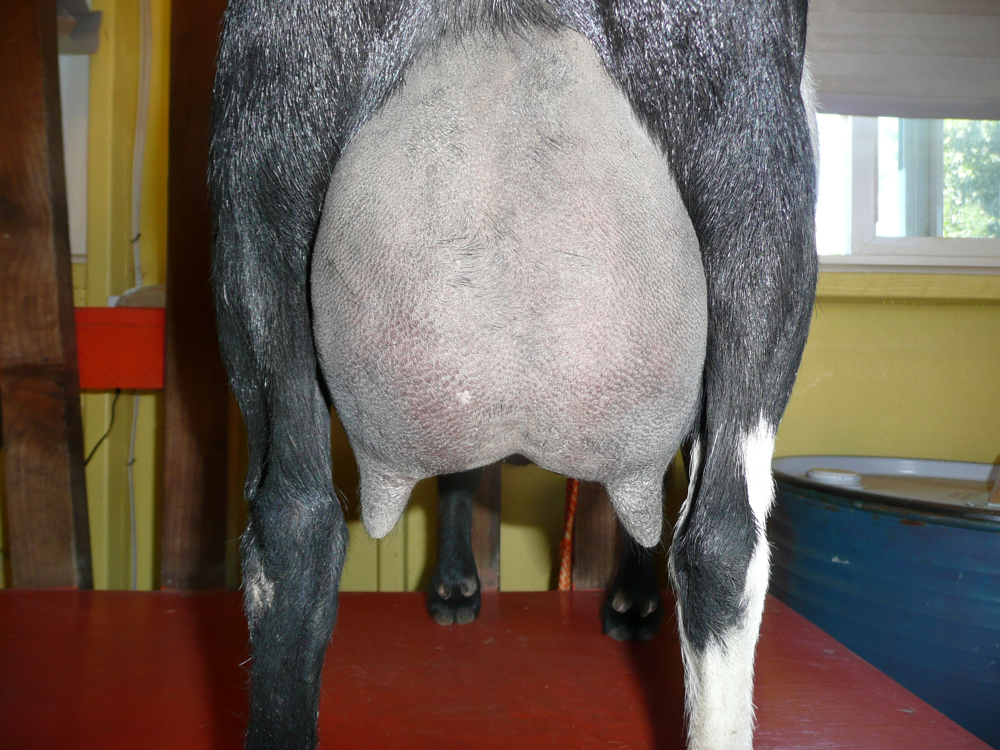
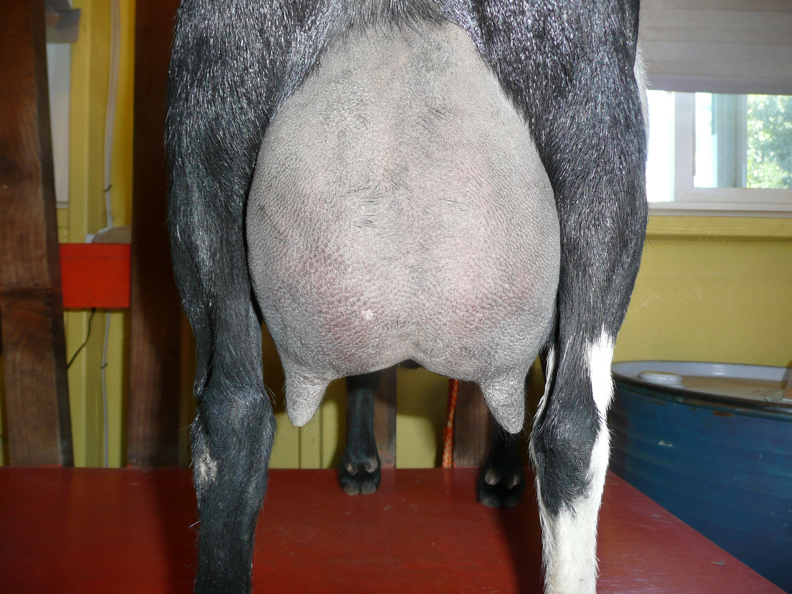

SENIOR DOES
| Doe | Photos |
|---|---|
|
DOB 05/16/2011 3*M +VE+84 Sire: CRF Castle Rock Harvest Moon +*B *S Dam: 3G Family Farm BS Love Bunny 2*M Sire's Sire: The Rosasharn TL Sitka Spruce ++B +*S Sire's Dam: MCH-SGCH Castle Rock Once Ina Blue Moon 2*D VVEV86 Dam's Sire: AGS Little Dipper R Big Spender +B Dam's Dam: SG Sly Farms S Lovebug 1*M DSD: SGCH Castle Rock Rainy Day Fund +VEV86 Zinfandel is the full sister to GCH 3G Family Farm HM Peaches 3*M +EEE88 Zinnie is a very sweet and beautiful girl. She has that soft pliable dairy skin that we all love. Her Udder is like butter, capacious yet it milks down to nothing. I wish she had a wider escutcheon. She is a pleasure on the milk stand. |


|
|
DOB 03/20/2012 Sire: Copper Penny HH Pollinator VVV87 Dam: AGS Sly Farms S Lovebug 1*M VEEV88 Sire's Sire: Algedi Farm DJ Hunka Honey *B Sire's Dam: Ponders End MTB Faerie Lille Dam's Sire: AGS Lost Valley KW Stetson +B Dam's Dam: AGS Sly Farms DJ Madelaine SSSS: GCH Algedi Farm Drops Of Jupiter EEEE91 SSSD: SGCH Rosasharn’s TL Zenith EEVE90 SSDD: SG Rosasharn’s Buckwheat Honey EEEE91 DSSS: GCH Algedi Farm Drops Of Jupiter EEEE91 DSSD: SG Rosasharn’s Buckwheat Honey EEEE91 |
 


|
|
DOB 03/02/2015 +EV+83 Sire: 3G Family Farm BR Bonenapper *B Dam: 3G Family Farm P Lovebugs Oreo 2*M Sire's Sire: SG Fairlea Barnaby Rudge +*B Sire's Dam: Copper Penny RR Dragon Lady VEEV90 Dam's Sire: Copper Penny HH Pollinator VVV87 Dam's Dam: 3G AGS SLY Farms S Lovebug 1*M VEEV8 Sweet Tea has a nicely blended foreudder. She has good capacity and milks down easily. |

|
|
DOB 03/10/2015 V+VV86 Sire: Dream-Weaver Pogo's Flash Dam: Ags DJ's Kids BS Cinnamon Latte Sire's Sire: Dream-Weaver Pokengo Pogo Sire's Dam: Dream-Weaver BD ST Helen Dam's Sire: AGS Little Dipper R Big Spender +B Dam's Dam: AGS Kapa DE' LE' KK Carmel Latte Miranda is flashy as well as very well balanced, level, smoothly blended and showing a lot of width, depth, dairy character and great extension of brisket. She has very strong forward facing feet and legs. She is long bodied and wide in the rear and escutcheon with lots of room for her udder. A good arch with wide attachment and large perfectly placed teats. |

|
|
DOB 03/10/2015 Sire: Dream-Weaver Pogo's Flash Dam: Ags DJ's Kids BS Cinnamon Latte Sire's Sire: Dream-Weaver Pokengo Pogo Sire's Dam: Dream-Weaver BD ST Helen Dam's Sire: AGS Little Dipper R Big Spender +B Dam's Dam: AGS Kapa DE' LE' KK Carmel Latte Dixie has a very soft, pliable udder that milks done to nothing. Her udder is attached very high and tight with a great MSL. Her high tight withers blend nicely into her long dairy body. Her feet are very straight and forward facing. She shows a lot of strength in her legs. |


|
|
DOB 03/24/2013
Sire: Camanna Music Mann Dam: CRF Castle Rock Lunar Eclipse VEEV91
Sire's Sire: Proctor Hill Farm To Go Daddy EEE92
Sire's Dam: Camanna CS Moonlight Sonata EEEE91
Dam's Sire: CRF Castle Rock Guy Noir +B
Dam's Dam: AGS Castle Rock Once Ina Blue Moon VVEV86
|


|
|
DOB 04/10/2015
Sire: Camanna Music Man Dam: Ags DJ's Kids KK Jayja Sire's Sire: Proctor Hill Farm To Go Daddy LA2014 EEEE92
Sire's Dam: CH Camanna CS Moonlight Sonata EEEE91
Dam's Sire: AGS Castle Rock Katonka
Dam's Dam: AGS Kapa DE' LE' Four Part Harmony |


|
CONTACT US
Barbara A Tucker
8 Gables
7280 Lauras Lane
Vacaville, CA 95688
925-250-6188
8gablesranch@gmail.com
8 Gables
7280 Lauras Lane
Vacaville, CA 95688
925-250-6188
8gablesranch@gmail.com